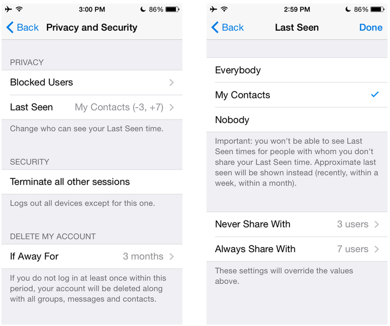

首頁 >
官方新聞 > 隱藏最後上線時間 - 洽當地完成了
每一天，我們的志願者驅動的支援團隊會從我們的用戶那裡得到數以千計的請求，幫助他們隱藏自己的最後上線時間。我們知道這是很重要的，而且一直在努力讓這個功能夠洽當的運作。我們希望確保 Telegram 用戶在相關設定上會有前所未有的精確度和靈活性，沒有一般的權衡取捨。
從今天起，在 iOS 和 Android 中的 Telegram 應用程式裡，您可以指定到底誰會看到您最後上線時間。您可以在三個基本選項中進行選擇（「每個人」，「我的聯絡人」和「沒有人」），並添加任意數量的例外情況進入「總是分享與...」及「從不分享與...」的部份中。
舉例來說，按這種方式您可以提供給大家您最後上線的時間，除了您的老闆；或沒有人除了您的婚姻伴侶（或相反，這取決於您）。如果您想只與您的聯絡人再加上一些與工作相關群組的成員分享您的最後上線時間，您可以在短短的幾個選擇中做到這一點。這使得無數的組合成為可能。
為什麼這很重要？
為了公平起見，您不分享您自己最後上線時間的對方，您也不會看到他的最後上線時間。這就是為什麼精細的控制很重要 - Telegram 的精確度可以幫助您避免艱難的選擇。例如，您不需要在「對老闆隱藏最後上線時間」與「能夠知道什麼時候最好的朋友是在線上」之間做出選擇。您可以兼得。

最後上線於不久前
當然，由於缺乏最後上線時間的標記，使得您很難知道您接觸到的人是否是 Telegram 的固定用戶，而他將能夠讀取您的最後上線訊息。這就是為什麼即使確切的最後上線時間是隱藏的，您仍然會看到一個近似值，就像「最後上線於不久前」（代表是，從一分鐘前到大約3天之間）或「最後上線於一個月內」。這可以讓跟蹤者遠離您，但能夠讓您了解一個人是否可透過 Telegram 取得聯繫。
談到不活躍的用戶，很快地，我們將不會有太多這類的人。從今天開始，Telegram 帳戶預設將會在6個月的閒置後自動銷毀。
自動銷毀帳戶
大公司喜歡累積他們用戶的數據和無限期的保留它。Telegram 不是一個商業組織，我們非常重視我們的磁碟空間。去年我們推出了自毀訊息，而今天我們則加入了自毀帳戶。
從現在起，如果您停止使用 Telegram，不登入達6個月之久，您的帳戶將連同所有訊息，媒體檔，聯絡人和其他所有您在 Telegram 雲端中儲存的數據片段一起刪除。您可以改變您的不活躍帳戶將自動銷毀的具體時間 - 用選擇範圍從1個月至1年。
這些新功能在我們的 iOS 和 Android 應用程式中已經可以使用。敬請期待更多隱私相關的更新。
2014年11月19日
Telegram 團隊